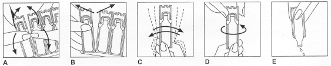

RÉSUMÉ DES CARACTÉRISTIQUES DU PRODUIT
ANSM - Mis à jour le : 10/12/2014
BECLOSPIN 800 microgrammes/2 ml, suspension pour inhalation par nébuliseur en récipient unidose
2. COMPOSITION QUALITATIVE ET QUANTITATIVE
Dipropionate de béclométasone ........................................................................................ 800 microgrammes
Pour 2 ml de suspension.
Pour la liste complète des excipients, voir rubrique 6.1.
Suspension pour inhalation par nébuliseur en récipient unidose.
4.1. Indications thérapeutiques
Traitement continu anti-inflammatoire de l'asthme persistant sévère de l'enfant.
L'asthme persistant sévère se définit par l'existence de symptômes permanents, de crises fréquentes, de symptômes d'asthme nocturne fréquents, une activité physique limitée par les symptômes d'asthme, un DEP ou un VEMS inférieur à 60 % des valeurs prédites, une variabilité du DEP supérieur à 30 %.
N.B. L'administration de dipropionate de béclométasone à l'aide d'un nébuliseur (appareil pour nébulisation) doit être réservée à l'enfant et au nourrisson en cas d'inaptitude à utiliser les autres dispositifs pour inhalation (dispositif poudre ou récipient pressurisé avec chambre d'inhalation et masque adapté).
4.2. Posologie et mode d'administration
La dose initiale sera déterminée selon la sévérité de la maladie avant traitement et sera ensuite ajustée en fonction des résultats individuels. Il convient de toujours rechercher la posologie minimale efficace.
Chez l'enfant, les doses recommandées sont de 400 ou 800 microgrammes 2 fois par jour (soit 1 récipient unidose de 800 μg/2 ml 2 fois par jour. Pour l'administration de 400 μg 2 fois par jour, il existe une présentation Béclospin 400 μg/1 ml mieux adaptée à cette posologie).
Après plusieurs jours (ou semaines) de ce traitement, lorsque l'état clinique est amélioré, que les symptômes ont régressé et que l'asthme est contrôlé, la posologie minimale efficace devra être recherchée. En cas de déstabilisation de l'asthme, la dose sera ré-augmentée.
Le contenu d'un récipient unidose entamé doit être utilisé immédiatement ou jeté.
Mode d'administration
Voie inhalée exclusivement.
Ce médicament doit être administré par voie inhalée à l'aide d'un appareil pour nébulisation (nébuliseur) à air comprimé (ou pneumatique). Les appareils ultrasoniques ne sont pas recommandés car ils peuvent ne pas être adaptés pour une administration correcte de ce médicament.
Ne pas injecter.
Utilisation de chaque récipient unidose:
1. Plier le récipient unidose dans les deux sens (voir Figure A).
2. Détacher soigneusement un nouveau récipient unidose de la plaquette en commençant par le haut (Figure B). Les autres récipients unidoses sont à remettre dans le sachet.
3. Agiter vigoureusement le récipient unidose et le retourner de haut en bas afin d'homogénéiser la suspension (figure C).
4. Ouvrir le récipient unidose en tournant la partie supérieure, en veillant bien à toujours le tenir en position verticale (Figure D).
5. Appuyer doucement sur le récipient unidose pour en verser le contenu dans la chambre du nébuliseur (voir Figure E).

NE JAMAIS UTILISER UN RECIPIENT UNIDOSE OUVERT.
La dose unitaire entamée sera utilisée immédiatement ou jetée.
Utilisation de l'appareil de nébulisation:
Se conformer au mode d'emploi conformément à la notice du fabricant de l'appareil de nébulisation (nébuliseur) utilisé.
Un volume de remplissage de la cuve du nébuliseur de 2 à 4 ml convient pour la plupart des appareils pneumatiques.
La suspension de Béclospin est prête à l'emploi. Néanmoins, s'il s'avère nécessaire de diluer la dose unitaire pour obtenir un volume final adapté au nébulisateur utilisé et à la durée de la séance de nébulisation recommandée, seule une solution stérile de chlorure de sodium à 0,9 % devra être utilisée.
Dans le cas général, le contenu de la cuve nébuliseur est pulsé par un débit d'oxygène (4 à 8 litres/minutes) pendant environ 10 à 15 minutes durant lesquelles le patient respire à son rythme habituel.
Après inhalation, la suspension inutilisée restant dans la cuve de l'appareil doit être jetée.
Se rincer la bouche après inhalation du produit et se rincer le visage en cas d'utilisation d'un masque facial.
Hypersensibilité connue aux corticoïdes ou aux excipients.
4.4. Mises en garde spéciales et précautions d'emploi
Il n'est pas destiné à juguler une crise d'asthme déclarée ou à soulager un épisode aigu de dyspnée ou de gêne respiratoire. Dans ces situations il faut avoir recours à un bronchodilatateur β-2 mimétique d'action rapide et de courte durée. Il conviendra d'en informer le patient et de lui prescrire le médicament adapté à cet effet en lui recommandant de le garder à disposition en permanence comme traitement de secours immédiat en cas de survenue de symptômes aigus.
Si un patient développe en quelques jours une augmentation rapide de sa consommation en bronchodilatateur β-2 mimétique d'action rapide et de courte durée par voie inhalée, on doit craindre (surtout si les valeurs du débimètre de pointe s'abaissent et/ou deviennent irrégulières) une décompensation de sa maladie et la possibilité d'une évolution vers un asthme aigu grave (état de mal asthmatique). Le médecin devra également prévenir le patient de la nécessité, dans ce cas, d'une consultation immédiate. La conduite thérapeutique devra alors être ré-évaluée.
Le patient doit être averti que l'amélioration de son état clinique ne doit pas conduire à une modification de son traitement, en particulier à l'arrêt de la corticothérapie par voie inhalée, sans avis médical.
L'attention des sportifs sera attirée sur le fait que cette spécialité contient un principe actif pouvant induire une réaction positive des tests pratiqués lors de contrôles antidopage.
La croissance des enfants recevant une corticothérapie inhalée à long terme doit être surveillée régulièrement. En cas de ralentissement de la croissance, le traitement devra être réévalué en vue de réduire les doses du corticoïde inhalé. Il conviendra de soigneusement peser les bénéfices attendus d'une corticothérapie face aux risques éventuels de ralentissement de la croissance. L'avis d'un spécialiste pneumopédiatre peut être requis.
La mise en route d'une corticothérapie par voie inhalée chez les patients ayant reçu une corticothérapie systémique prolongée ou à fortes doses ne dispense pas des précautions nécessaires pour le sevrage ou la réduction d'une corticothérapie systémique. La réduction de la posologie des corticoïdes oraux sera réalisée progressivement en respectant des paliers successifs selon les recommandations conventionnelles. La freination de la fonction corticosurrénalienne peut persister plusieurs semaines.
Comme avec toute corticothérapie inhalée, une attention particulière est nécessaire chez les patients atteints de tuberculose pulmonaire évolutive ou quiescente.
En cas d'infection bronchique ou de bronchorrhée abondante, un traitement approprié est nécessaire afin de favoriser la diffusion optimale du produit dans les voies respiratoires.
Des effets systémiques peuvent apparaître lors de traitement au long cours avec des doses élevées de corticoïdes par voie inhalée. Le risque de retentissement systémique reste néanmoins moins important avec les corticoïdes inhalés qu’avec les corticoïdes oraux. Les effets systémiques possibles sont syndrome de Cushing ou symptômes cushingoïdes, amincissement cutané, hématomes sous cutanés, insuffisance surrénalienne, retard de croissance chez les enfants et les adolescents, diminution de la densité osseuse, cataracte et glaucome et plus rarement, troubles psychologiques et du comportement comprenant hyperactivité psychomotrice, troubles du sommeil, anxiété, dépression ou agressivité (en particulier chez l’enfant).
Il convient donc de toujours veiller à rechercher la posologie minimale efficace permettant de maintenir le contrôle de l’asthme.
4.5. Interactions avec d'autres médicaments et autres formes d'interactions
Sans objet.
Les études effectuées chez l'animal ont mis en évidence, comme avec tous les corticoïdes, un effet tératogène variable selon les espèces.
En clinique, les études épidémiologiques n'ont pas mis en évidence d'effet malformatif lié à l'utilisation de la béclométasone au cours du premier trimestre de la grossesse.
Les problèmes néonataux décrits avec la corticothérapie par voie générale (retard de croissance intra-utérin, insuffisance surrénale néonatale) n'ont pas été rapportés, à ce jour, lors d'une administration de corticoïdes par cette voie d'administration.
En conséquence, ce médicament peut être prescrit pendant la grossesse si besoin.
Les corticoïdes sont excrétés dans le lait maternel.
4.7. Effets sur l'aptitude à conduire des véhicules et à utiliser des machines
Aucun effet du dipropionate de béclométasone sur l'aptitude à conduire des véhicules et à utiliser des machines n'a été rapporté.
· Fréquemment possibilité de survenue de candidose oropharyngée (muguet). Elle cède le plus souvent spontanément ou à un traitement approprié et il est exceptionnel qu'elle nécessite l'arrêt de la corticothérapie par voie inhalée. Son risque d'apparition augmente avec la dose utilisée et le nombre de prises. Elle peut être prévenue par rinçage de la bouche à l'eau après inhalation.
· Possibilité de survenue de gêne pharyngée, dysphonie, de raucité de la voie, pouvant être prévenues par rinçage de la bouche après inhalation.
· Quelques cas d'irritation du visage après l'administration de corticoïdes inhalés à l'aide d'un masque facial ont été décrits. Il est recommandé de rincer le visage à l'eau après utilisation d'un masque facial.
· Des effets systémiques peuvent apparaitre lors de traitement au long cours avec des doses élevées (voir rubrique 4.4). Ont été décrites avec la corticothérapie par voie inhalée des observations d'amincissement cutané, d'hématomes sous-cutanés, de cataracte et de glaucome, de dépression des fonctions surrénaliennes biologiques (diminution du cortisol plasmatique et de la cortisolurie des 24 heures) et de raréfaction du tissu osseux. Les conséquences cliniques d'une administration à long terme, notamment sur le tissu osseux et la croissance, ne sont pas clairement établies. L'administration de fortes doses au long cours peut donc nécessiter une surveillance, en particulier chez l'enfant et le sujet âgé.
· Des réactions d'hypersensibilité (rash, urticaire, prurit et érythème et œdème de Quincke) ont été rapportées avec la béclométasone inhalée.
· Fréquence très rare : cataracte et glaucome.
· Troubles psychiatriques :
Fréquence indéterminée : hyperactivité psychomotrice, troubles du sommeil, anxiété, syndrome dépressif, agressivité, troubles du comportement (principalement observés chez l’enfant).
Déclaration des effets indésirables suspectés
La déclaration des effets indésirables suspectés après autorisation du médicament est importante. Elle permet une surveillance continue du rapport bénéfice/risque du médicament. Les professionnels de santé déclarent tout effet indésirable suspecté via le système national de déclaration : Agence nationale de sécurité du médicament et des produits de santé (ANSM) et réseau des Centres Régionaux de Pharmacovigilance - Site internet : www.ansm.sante.fr
L'emploi de ce médicament à des doses très supérieures aux doses recommandées est le reflet d'une aggravation de l'affection respiratoire nécessitant une consultation rapide pour ré-évaluation thérapeutique.
5. PROPRIETES PHARMACOLOGIQUES
5.1. Propriétés pharmacodynamiques
Classe pharmacothérapeutique: Glucocorticoïde par voie inhalée, antiasthmatique
Code ATC: R03BA01
(R: système respiratoire)
Le dipropionate de béclométasone est un corticoïde administré par voie inhalée, il exerce un effet anti-inflammatoire local sur les muqueuses des voies respiratoires.
Son effet freinateur sur l'axe hypophysosurrénalien se manifeste à une posologie égale ou supérieure à 2000 μg par 24 heures.
5.2. Propriétés pharmacocinétiques
Après inhalation, le dipropionate de béclométasone absorbé directement par les poumons est rapidement métabolisé, au niveau hépatique, en monopropionate de 17-béclométasone puis en son dérivé alcoolique inactif.
Après administration de dipropionate de béclométasone par inhalation, une faible proportion de la dose est inhalée et atteint les voies respiratoires, la majeure partie de la dose étant retenue dans la bouche puis avalée et éliminée par les fecès. L'activité pharmacologique et le devenir métabolique du dipropionate de béclométasone administré par voie inhalée diffèrent, selon que l'absorption se produit au niveau pulmonaire ou gastro-intestinal. La fraction de la dose de dipropionate de béclométasone inhalé directement absorbée par les poumons dans la circulation sanguine est rapidement métabolisée au niveau hépatique pour donner le monopropionate de 17-béclométasone puis son dérivé alcoolique inactif, avant excrétion sous forme de métabolites dans la bile et les urines. Le degré de biotransformation pulmonaire du dipropionate de béclométasone est limité.
5.3. Données de sécurité préclinique
Chez l'animal, la toxicité du dipropionate de béclométasone est liée à une exacerbation de l'effet pharmacologique glucocorticoïde.
Des malformations ont été observées au cours des études de reproduction menées chez l'animal avec les glucocorticoïdes tels que le budésonide (fente palatine, malformation squelettiques). Toutefois, ces résultats expérimentaux observés chez l'animal ne sont pas extrapolables à l'homme aux doses recommandées.
Laurate de sorbitan, polysorbate 20, chlorure de sodium, eau purifiée.
Sans objet.
2 ans.
Après ouverture du sachet protecteur, les doses peuvent être conservées maximum 3 mois dans le sachet.
6.4. Précautions particulières de conservation
Pas de précautions particulières de conservation.
6.5. Nature et contenu de l'emballage extérieur
2 ml en récipient unidose (PE); boîte de 20 récipients unidoses conditionnés par plaquette de 5 récipients unidoses en sachet.
6.6. Précautions particulières d’élimination et de manipulation
Pas d'exigences particulières.
7. TITULAIRE DE L’AUTORISATION DE MISE SUR LE MARCHE
CHIESI SA
11, avenue Dubonnet
92400 Courbevoie
8. NUMERO(S) D’AUTORISATION DE MISE SUR LE MARCHE
· 369 635-0: 2 ml en récipient unidose (PE); boîte de 20.
9. DATE DE PREMIERE AUTORISATION/DE RENOUVELLEMENT DE L’AUTORISATION
[à compléter par le titulaire]
10. DATE DE MISE A JOUR DU TEXTE
[à compléter par le titulaire]
Sans objet.
12. INSTRUCTIONS POUR LA PREPARATION DES RADIOPHARMACEUTIQUES
Sans objet.
Liste I.